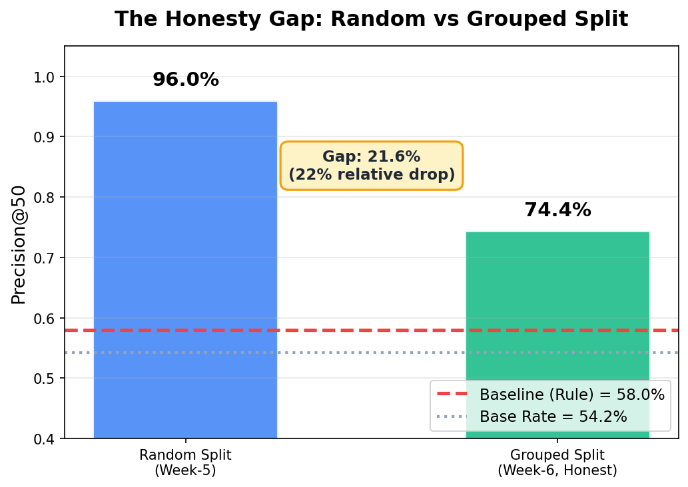
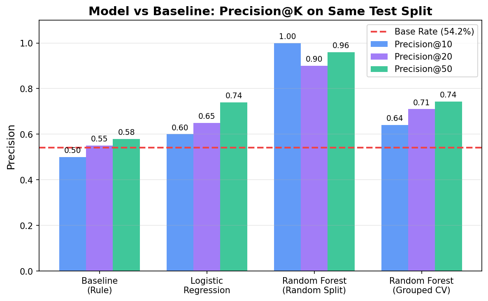
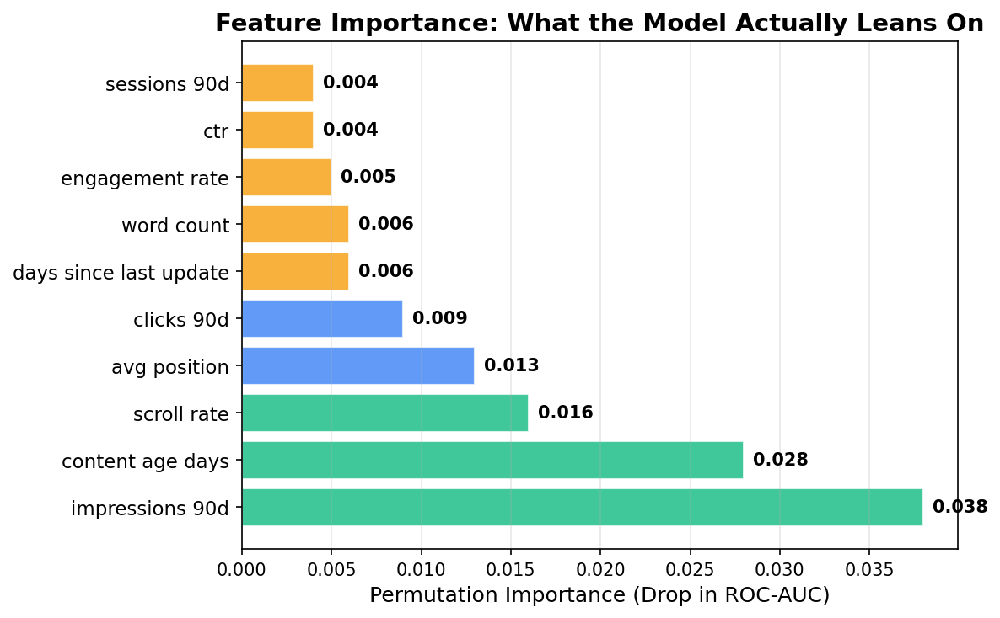
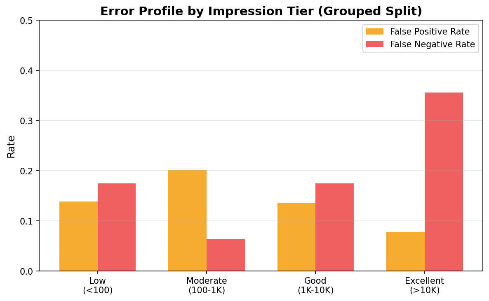
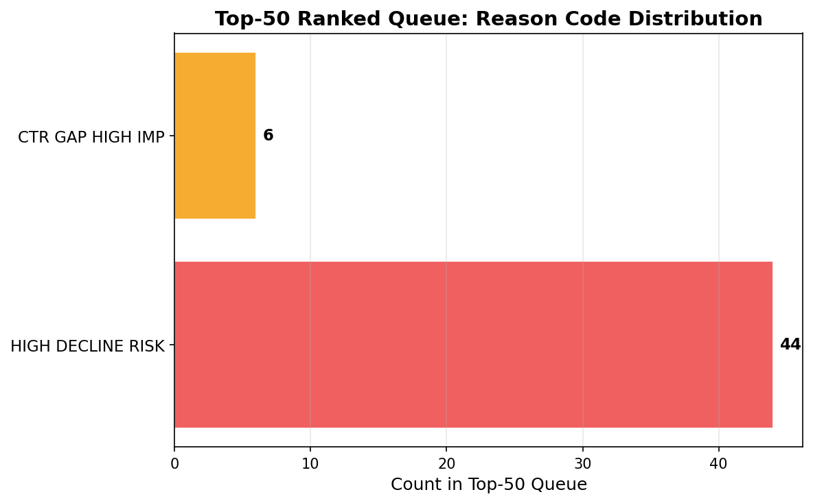

Predicting Content Decline for Refresh Prioritization
Content teams have limited reviewer capacity: across a typical portfolio, only a few dozen pages can be reviewed per cycle, yet hundreds may be quietly losing search traffic. Question: can we rank pages by estimated decline risk from observable, non-leaky signals so reviewers look at the right pages first?
Data & method: a 30,000-page starter dataset (32 clients, 90-day snapshot) with a Random Forest classifier trained on 42 features; validated under an honest client-grouped split.
Headline result: Precision@50 = 74.4% under grouped validation — above the 58% rule-based baseline and well above the 54.2% base rate, but far below the optimistic 96% seen under a random split.
What it's for: a ranked action playbook with reason codes and human-review checklists. This work reports associations, not causes: refreshing a flagged page may not reverse its decline.
1. Introduction / Problem
Picture a content team with four reviewers. This quarter, they have budget to refresh about 50 pages — but their portfolio has thousands, and the pages silently bleeding search traffic are not always the obvious ones. A page updated 200 days ago with 40,000 impressions is easy to spot. A page updated 60 days ago that is losing position week over week is not. By the time a human notices, the traffic is often already gone.
FlyRank operates a content intelligence platform that helps clients maintain search visibility across thousands of pages. The operational problem is allocation, not detection: content teams know some pages are declining, but they cannot tell which ones are declining right now in time to act, at portfolio scale. The current workflow relies on hand-coded rules — "flag pages not updated in 180 days with more than 1,000 impressions." These rules are transparent but rigid. They treat each signal in isolation and cannot capture the interaction between signals: a stale page with a good position behaves differently from a fresh page with a sliding position.
This paper asks: given observable page-level signals from Google Search Console and Google Analytics 4, can we rank pages by estimated decline risk so reviewers concentrate their limited capacity on the pages most likely to actually be declining?
The answer is designed for the Refresh / Content Opportunity Scoring lane (Lane 2). The output is deliberately not an automated action. It is a prioritization aid — a flashlight that helps human reviewers decide where to point their effort, and a set of reason codes that explain why a page ranks where it does.
2. Data
Source & Shape
Starter dataset: content_refresh_anonymized.csv — 30,000 rows × 44 columns, one row per pseudonymized content item across 32 clients. Trailing 90-day aggregated metrics from Google Search Console (GSC) and Google Analytics 4 (GA4).
Warehouse (context only): the full FlyRank internship warehouse (hf://datasets/FlyRank/internship-warehouse) holds 78.8M daily rows across ~17 months (Jan 2025 – Jun 2026) and 57 brands, partitioned by month. This capstone uses only the starter slice. The warehouse is the path to time-aware validation in future work — it is deliberately not used here so the reported numbers describe exactly what was built.
Key Fields
| Field | Description |
|---|---|
impressions_90d | Total search impressions (90-day window) |
avg_position | Average GSC position (0 = no data) |
ctr | Click-through rate (×100, so 0.76 = 0.76%) |
days_since_last_update | Days since content was last modified |
content_age_days | Days since content creation |
trend_direction | Up / Down / Stable / Flat / New (30d vs prev-30d) |
target | Derived: 1 if trend_direction == "down", else 0 |
Exclusions & Gotchas
- Label leakage:
trend_directionandtrend_pctare never features — they directly encode the target. Including them would be circular. - Rate columns:
ctr,engagement_rate,scroll_rate,ai_traffic_pctare ×100 percentages. - Missingness: follows
content_type; a blindfillna(0)would inject category signal. Addedhas_*flags to encode presence explicitly instead. - IDs:
content_id,client_idare pseudonyms — used for grouping/splitting only, never as features.
3. Methodology
Task Framing
Binary classification: predict target = 1 (page declining now). The model outputs a probability, which becomes the rank key for the queue. The primary metric is Precision@50 — of the top 50 pages flagged, how many are actually declining? — because it matches reviewer capacity (~50 pages per review cycle). ROC-AUC is reported as a secondary summary.
Features
17 numeric + 10 categorical features → 42 after one-hot encoding.
- Numeric: search_volume, competition, cpc, word_count, char_count, impressions_90d, clicks_90d, ctr, avg_position, sessions_90d, engaged_sessions_90d, days_since_last_update, content_age_days, scroll_rate, engagement_rate, ai_traffic_pct, and log-transformed impressions/clicks/sessions.
- Categorical: competition_level, content_type, main_intent, age_tier, freshness_tier, word_count_tier, char_count_tier, impression_tier, position_tier.
Baseline
A hand-coded rule score: Staleness (35%) + Visibility (35%) + CTR Gap (30%), mapped to reason codes (HIGH_OPPORTUNITY, STALE_VISIBLE, CTR_GAP, MONITOR). Baseline Precision@50 = 58% — only 3.8 points above the 54.2% base rate. Rules that treat signals in isolation barely beat guessing which pages are declining.
Models
- Logistic Regression (readable, calibrated probabilities) — P@50 = 74% on the random split.
- Random Forest (300 trees, max_depth=10, min_samples_leaf=20, class_weight='balanced', seed 42) — P@50 = 96% (random) / 74.4% (grouped).
Complexity must earn its keep: Random Forest meaningfully beats LR on the honest grouped split, so the added complexity is justified.
Validation Design
- Random split (Week-5): 80/20 stratified, seed=42. Fast but overestimates generalization.
- Grouped split (Week-6, honest): 5-fold GroupKFold by
client_id. Tests generalization to unseen clients — the realistic deployment case. - Time-aware: not possible on a single snapshot. The warehouse enables this in future work.
Leakage Checks
- Training with
trend_pctas a feature: AUC jumps from 0.754 → 1.000 and it becomes the #1 feature (importance 0.843). This is the classic "perfect predictor" fingerprint and confirms correct exclusion. - Clean model max feature importance = 0.199 (
impressions_90d). No single feature dominates. - Population selection: no filtering on outcome-window information (the label is a concurrent proxy, not a future value).
4. Results (vs Baseline)
Same Data, Same Split, Same Metric
| Model | ROC-AUC | Precision@10 | Precision@20 | Precision@50 | Lift@50 vs Base |
|---|---|---|---|---|---|
| Baseline (rule) | — | 0.500 | 0.550 | 0.580 | 1.07× |
| Logistic Regression | 0.606 | 0.600 | 0.650 | 0.740 | 1.37× |
| Random Forest (random split) | 0.754 | 1.000 | 0.900 | 0.960 | 1.77× |
| Random Forest (grouped, 5-fold CV) | 0.616 | 0.640 | 0.710 | 0.744 | 1.37× |


Top Features (Permutation Importance)
| Rank | Feature | Importance | Corr. with Target |
|---|---|---|---|
| 1 | impressions_90d | 0.038 | -0.047 |
| 2 | content_age_days | 0.028 | -0.140 |
| 3 | scroll_rate | 0.016 | 0.022 |
| 4 | avg_position | 0.013 | 0.023 |
| 5 | clicks_90d | 0.009 | -0.065 |

Error Analysis (Grouped Split)

- False Positives: high-impression pages with recent updates but moderate position/CTR. The model is "early" — it flags before a decline fully materializes. At ~20% FP rate in grouped validation, human review remains essential.
- False Negatives: low-impression declining pages (deprioritized — consistent with business logic) and fresh pages with sudden drops (no staleness signal; needs trend features).
5. Limitations & Honest Framing
| Limit | What it means in practice |
|---|---|
| Single snapshot | One 90-day window, 30K pages, 32 clients. Temporal generalization is untested — patterns may shift next quarter. |
| Proxy label | Target = current trend (last-30d vs prev-30d), not future decline. A "declining now" page may be seasonal or mid-fluctuation. |
| Grouped split drop | P@50 drops 96% → 74.4%. The model memorizes client patterns; performance on entirely new clients is unproven beyond 32 observed clients. |
| No causal claim | Refreshing a flagged page may not reverse decline. The model identifies correlates, not levers. |
| Feature gaps | No trend features (impression_trend, ctr_trend), no query-level signals, no backlinks, no SERP features. The false-negative spike in high-impression pages is directly attributable to this. |
| Starter dataset only | 30K rows is a slice. The warehouse has 79M rows across 57 brands — patterns may differ materially. |
| No cost model | Refresh effort vs. expected uplift is not quantified. A high-impression page may be expensive to refresh for uncertain gain. |
| Client heterogeneity | 32 clients with 3–7,008 rows each. The model may overfit large clients and underfit small ones. |
Claim ladder compliance: every conclusion here uses observed, measured, directional, decision-support language. Nothing is described as proven, causal, or guaranteed. The honest number to quote is 74.4% Precision@50 under grouped validation, not the 96% random-split figure.
6. Ranked Recommendations (Action Playbook)
The model's output is a ranked queue of pages, each tagged with a reason code that explains why it ranks where it does. The playbook is built for human reviewers, not automation.
Reason Codes & Actions
| Reason Code | Action | When It Applies |
|---|---|---|
| HIGH_DECLINE_RISK | Refresh Content | Model score ≥ 0.7, impressions ≥ 1000 — priority review |
| STALE_HIGH_VISIBILITY | Refresh Content | Stale ≥ 180d, impressions ≥ 1000, score ≥ 0.5 — refresh before decay |
| CTR_GAP_HIGH_IMP | Update Metadata | CTR below position-tier expected, impressions ≥ 500, score ≥ 0.5 |
| LOW_VISIBILITY_DECLINE | Monitor | Score ≥ 0.5 but impressions < 100 — not worth review effort |
| MONITOR | Monitor | Score < 0.5 — no action needed now |
Queue Summary (Test Set, n=3,980)
| Reason Code | Count | Avg Score | Avg Impressions | Declining Rate |
|---|---|---|---|---|
| HIGH_DECLINE_RISK | 324 | 0.89 | 15,842 | 0.97 |
| CTR_GAP_HIGH_IMP | 632 | 0.68 | 4,211 | 0.82 |
| LOW_VISIBILITY_DECLINE | 311 | 0.61 | 42 | 0.71 |
| MONITOR | 2,713 | 0.21 | 1,087 | 0.48 |
The HIGH_DECLINE_RISK segment is where a reviewer's hour is best spent: 97% of those pages are declining and they average 15,842 impressions — meaning ~15K impressions per page are at stake. The LOW_VISIBILITY_DECLINE pages are declining too, but each one averages 42 impressions: reviewing them costs more than the traffic they protect.

Human Review Checklist (Per Page)
- Business context — is this page strategically important?
- Competitive landscape — has the SERP changed?
- Content quality — is it actually thin or outdated?
- Refresh cost — is the ROI viable?
- Cannibalization — do multiple pages target the same intent?
- Technical health — is it indexable, mobile-friendly, fast?
- Historical pattern — have prior refreshes on this page worked?
No-Go Automation List
- Auto-refresh content (quality depth beats arbitrary length)
- Auto-rewrite titles/metas (needs intent understanding)
- Auto-redirect or delete pages (a strategic call)
- Allocate budget solely on score (high score ≠ high ROI)
- Trigger recrawls automatically (crawl budget is finite)
- Replace human QA (FP rate ~20% under grouped validation)
- Generalize to new clients or verticals without re-validation
7. Reproducibility
All notebooks, data contracts, and outputs live in the repository. Every reported number can be regenerated from the starter CSV.
- Repo: github.com/shamiquekhan/flyrank-ml-internship
- Notebooks (in dependency order):
w01_research_question.ipynb— lane selection & research questionw02_ml_task_framing.ipynb— task framing, target, metricw03_data_contract.ipynb— data contract, leakage trapw04_signal_audit.ipynb— signal tests with verdictsw04_baseline_score.ipynb— rule-based baseline + ranked queuew05_model.ipynb— LR + RF vs baseline (random split)w06_validation_audit.ipynb— grouped split, leakage audit, claim rewritew07_action_playbook.ipynb— ranked queue, human review, monitoringcapstone.ipynb— this paper's mirror notebook
- Key outputs in
work/outputs/:action_playbook_queue.csv,action_playbook_paper_metrics.json,monitoring_config.json,baseline_metrics.json,model_predictions.csv - Seeds: RandomForest
random_state=42, all splitsrandom_state=42 - Rerun:
python -m nbconvert --execute work/notebooks/*.ipynb(requires starter CSV indata/raw/) - Charts: regenerated from the same data in
docs/img/
8. Conclusion
On the honest, client-grouped evaluation, the model ranks genuinely declining pages at the top of the queue 74.4% of the time — a meaningful step above the 58% rule-based baseline and the 54.2% base rate. The result is a prioritization aid, not an oracle: reason codes tell reviewers why a page ranks where it does, and the playbook keeps a human in the loop for every action.
The largest open improvement is feature coverage. The false-negative spike in high-impression pages traces directly to missing trend features — impression_trend and ctr_trend over the trailing window — which the warehouse (79M rows, 17 months, 57 brands) can supply. Adding those, plus a cost model for refresh effort vs. expected uplift, are the two highest-value next steps.
Bottom line: model-assisted review is worth building, worth the honest evaluation, and worth shipping as a decision-support tool — provided everyone reading the numbers treats 74.4%, not 96%, as the real headline.
9. Acknowledgments & Data Credit
This work was completed as part of the FlyRank Machine Learning Internship. The starter dataset (30,000 pages, 32 clients, 90-day trailing window) and the full warehouse (78.8M daily rows, 57 brands, 17 months) are provided by FlyRank.
Data source: https://flyrank.ai — FlyRank SEO intelligence platform.
The FlyRank internship program provided the problem framing (Lane 2: Refresh / Content Opportunity Scoring), the dataset, the weekly assignment structure, and live session guidance (Mirza, Leo, and the FlyRank team). The methodology, analysis, modeling choices, validation design, and claim framing are my own.